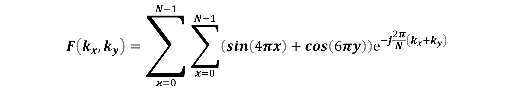

New interactive game
Can you rebuild this microstructure?
Generate colored patterns, guess the component count, then watch PCA reconstruct the image.
Explore at your own pace
Simple explanations and interactive examples about materials, images and data.
New interactive game
Generate colored patterns, guess the component count, then watch PCA reconstruct the image.

Start here
Build a picture one layer at a time. Start with everyday comparisons, then try the interactive example.

Data analysis
Explore directions of variation and learn why a mathematical pattern needs a physical explanation.

Machine learning
Change the model and the noise to compare fitting the observations with predicting the underlying trend.

Materials design
Count possible compositions and processing choices with an interactive design-space example.

Image analysis
Understand image frequencies, Fourier space and what changes when an image is transformed.
Materials data
Learn how materials data and descriptors connect to machine-learning problems.
Image analysis
Look at the information contained in micrographs and how image analysis can reveal it.
Image analysis
Explore practical image measurements and their interpretation.
Machine learning
Use feature contributions to examine how a model arrives at its predictions.
Machine learning
Follow the basic ideas behind learning from data with a neural network.
Image analysis
Explore how structures at different scales contribute to the behavior of hierarchical materials.
No matching topics. Try another word or clear the search.